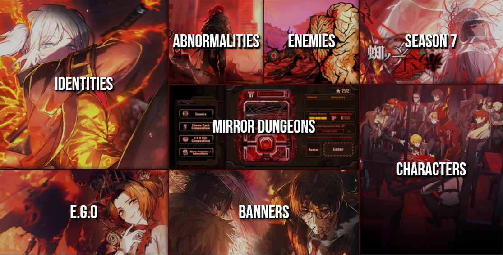

Limbus Company WIKI
Ovo je wikipedia za Limbus Company
Ovo je stranica za upoznavanje i istaživanje o video igri Limbus Company

Bonus Update Version 9 Content Guide for Limbus Company
Ovde pisem neki random text tek tolko da nekaj da bude nekaj nemam pojma a isto i testiram kak bu reagirala ova kutija usrana ak denem 3 kile teksta
Limbus Company Expansion
Ovde isto nekaj pisem i cak mi se dobro raširil div pa bum se ipak malo kasnije ubil jer cak dela ovo nekak pa sam zadovoljni i fali teksta pa ovo pisem
Limbus Company Identities
U igri ima 12 glavnih likova i gacha sistem radi tak da pullaš za likove koji su samo drugi identity tih glavnih likova, bas je tuff nije go genshin smrdljivi
Limbus Company Characters
Ovo je isto jako tuff tih 12 likova su svaki bazirani na jenu knjigu to sam skuzil dok smo delali Don Kihota na Hrvatskom onda sam se setil da se v igici tak jena zove
Limbus Company Combat
Za razliku od jene OGAVNE igrice ove cak treba mislit o tome kaj klikces, ima 7 afiniteta/elementa i svaki karakter koristi 3-8 drugacijih i tu nema dost mesta da nist objanim jebote
Limbus Company Story
Al tak je opasno tuff doslovno se sve isto događa u njihovim pricama kak i u stvarnim knjigama sam kaj je malo zavrnuto da bude zanimljivo ono Don Kihot je anime zenska postal bro

Limbus Company E.G.O.
- To su ti kao ulti napadi u kaj troše resurse koje skupiš kroz fajtanje, vizuali su brutalni i imaju tak tuff visual efekte da dojdes.
- Fora je kaj ti napadi mijenjaju cijeli izgled lika na sekundu i daju mu buffe i promeniju resistances, tak da ih moraš pametno čuvat za vazne enemije da te ne pojeju.
Limbus Company Mirrors
- Ovo ti je onaj klasični roguelike mod gdje ideš kroz sobe i biraš si puteve, a usput skupljaš giftove koji ti pojačaju likove i daju lude buffove.
- Tu se najviše skuplja resurse za pullanje i levelanje likova, tak da ak oćeš dobre likove moras ovo cepat svaki dan ak oces prejti nekaj kak spada.
"Tick-tock. The clock is always ticking, Dante."
— Faust